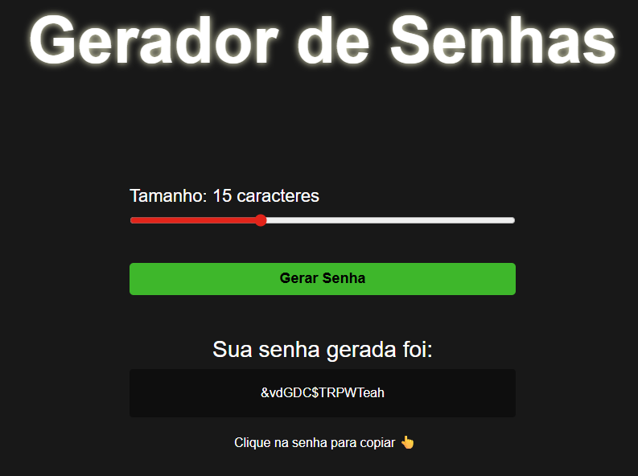
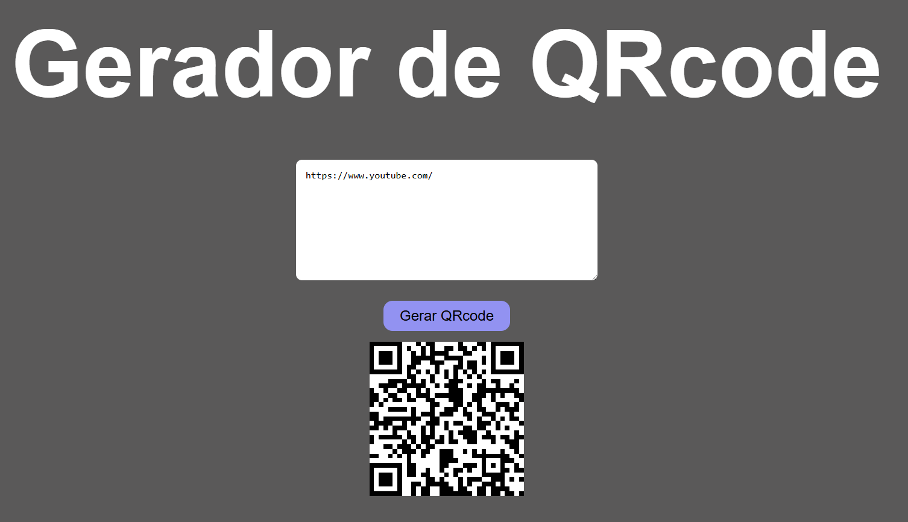
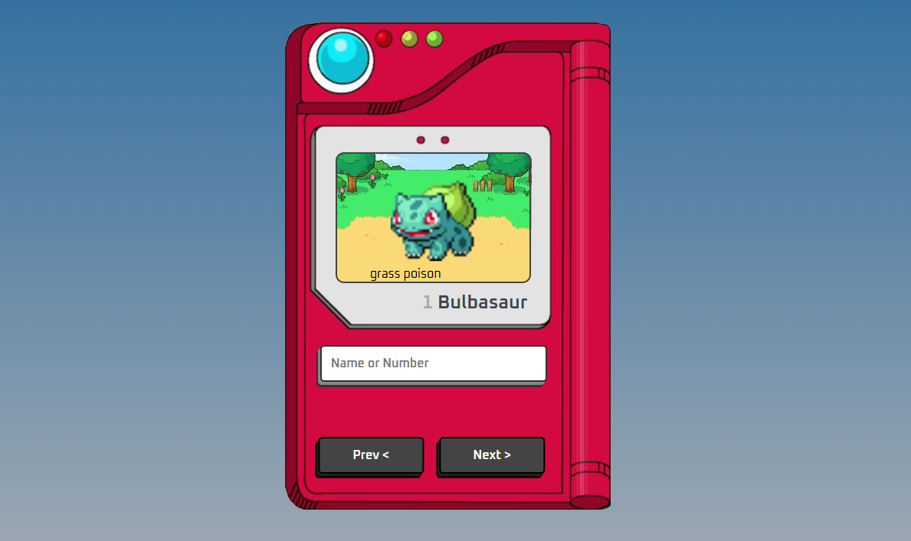
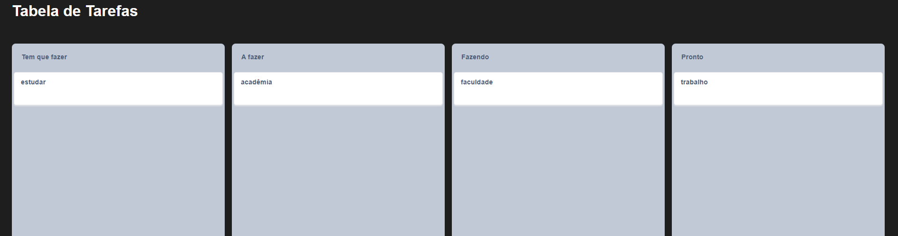

Desenvolvimento em sistemas básicos, turtle, pygame, chatbots, programas com random e time. 2 anos de experiência não profissional.
DevOrte
Gabriel Antônio Lucas Orte
Desenvolvedor Web e Web Designer
"Com sede de conhecimento."Essa frase de Steve Jobs foi a principal causa do meu interesse ter despertado nessa área. Ela foi o começo da minha vontade de ter conhecimento, para poder apresentar minhas ideias ao mundo. Desde então venho aperfeiçoando minhas habilidades para trazer praticidade e eficiência a todos.
Possuo experiência com o desenvolvimento de websites, sendo projetos tanto full-stack quanto front-end e back-end. Conhecimento sobre aplicações mobile, automatização de sistemas, banco de dados, jogos digitais e criptografia.
Além da criação de aplicações, também tenho familiaridade com criação e estruturação de designs bem elaborados e profissionais de marketing, como banners ou posters.
Desenvolvimento em sistemas básicos, turtle, pygame, chatbots, programas com random e time. 2 anos de experiência não profissional.

Criação de programas comuns, boletim, calculadora e jogos de lógica. Alta prática com loops e condicionais. 2 anos de experiência não profissional.

Criação de sistemas complexos, loja virtual, carrinho de compras, Laravel e sites profissionais. 3 anos de experiência não profissional.

Desenvolvimento de bancos de baixa e média escala para padarias, lojas, empresas e escolas. 3 anos de experiência não profissional.

Experiência na criação de UX profissionais, com design moderno e código limpo. Mais de 20 sites já criados com 3 anos de experiência não profissional.

Aperfeiçoamento de UX, animações, Tailwind CSS e designs interativos. 3 anos de experiência não profissional.

Desenvolvimento de APIs, timers, geradores e projetos menores. Manipulação de APIs e sistemas simples. 2 anos de experiência não profissional.

Desenvolvimento de bots simples com funções. 3 meses de experiência não profissional.
Sou um jovem estudante de 17 anos. Me interessei pelo universo da programação desde cedo, juntamente com o design de panfletos, cartazes e banners. Com 15 anos entrei para a instituição ETEC e comecei a me aprofundar completamente nesses dois setores.
Hoje, continuo estudando diariamente para aprofundar meus conhecimentos, principalmente nas tecnologias que mais gosto, que são PHP e MySQL. Meu sonho é ser um programador sênior, trabalhando para o exterior.
No momento busco meu primeiro estágio para conseguir ganhar experiência profissional, afinal a única experiência que possuo é a parte teórica e prática instruída.

HTML
CSS
JS
PHP
Gerador de senhas seguras com opções de comprimento e caracteres especiais.

HTML
CSS
JS
PHP
Gerador de QR Codes personalizados a partir de links e textos inseridos pelo usuário.

HTML
CSS
JS
API
Pokédex interativa consumindo a PokéAPI para exibir dados dos Pokémon em tempo real.

HTML
CSS
JS
SQL
Sistema de tabela dinâmica com filtros e ordenação, integrada a banco de dados MySQL.